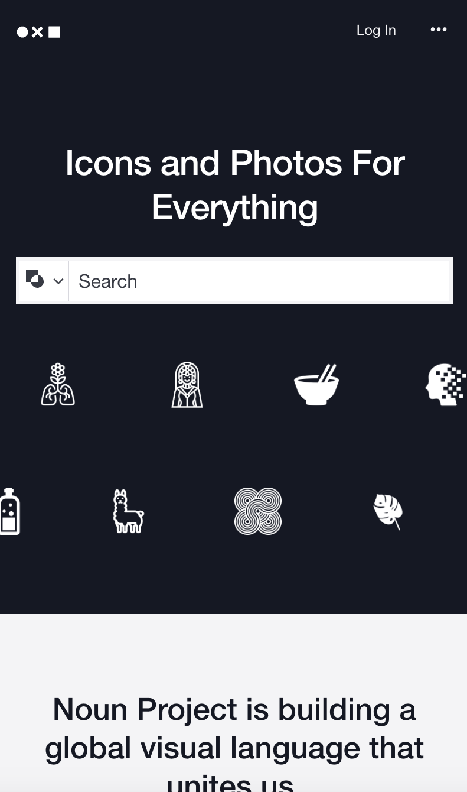
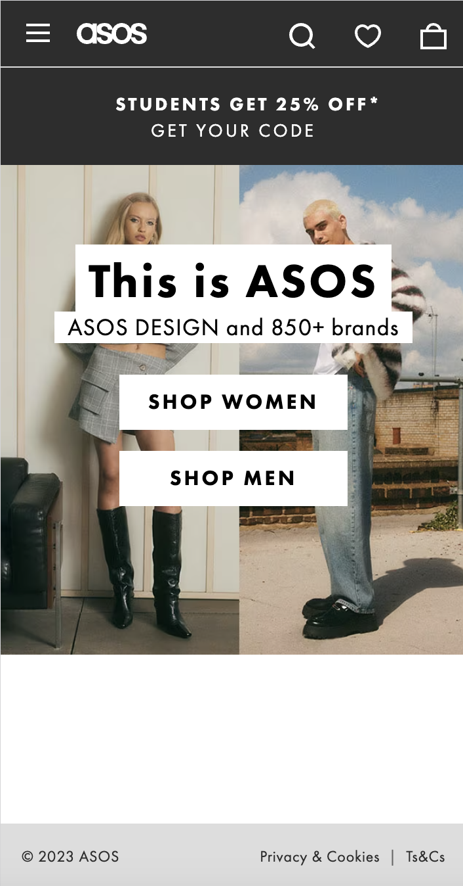

Shane Cook's Design Principles Document
Visual Hierarchy
Visual Hierarchy is like the conductor of a design orchestra. It's all about arranging elements so that people's eyes naturally go where you want them to and understand what's most important. Think of it as using different tools like size, color, fonts, spacing, and where you place things to make the important stuff stand out. This isn't just a fancy design trick; it's a fundamental concept that makes websites, graphics, and other designs easy to understand and user-friendly by creating a clear and organized visual path for folks to follow.
The Noun Project
When you visit TheNounProject.com, you'll notice how they cleverly use Visual Hierarchy to guide your experience. At first glance, your eyes are drawn straight to the search bar, and it's not just because it's big – it's also the bold white color against the dark background that makes it impossible to miss. This smart design immediately encourages you to start searching for what you need.
As you take in the page, you'll find your gaze naturally shifting down to the row of white icons just below the search bar. These icons aren't just there for decoration; they offer you a sneak peek at what you might find in your search. It's like a little teaser, making you even more eager to explore. This thoughtful layout emphasizes the website's visual hierarchy, making it easier and more enjoyable for you to find what you're looking for.
Hick's Law
Hick's Law is a bit like realizing that when you have too many menu options at a restaurant, it takes longer to choose your meal. It's a psychological principle that says the more choices we have, the more time we spend deciding. This happens because each choice needs some thinking and evaluation. In the world of design, like when creating websites or apps, we use Hick's Law to remind us that keeping things simple and clear helps people make decisions faster and have a better time using what we've designed. So, it's like making sure the menu at a restaurant isn't overwhelming, making it easier for diners to pick something delicious without too much fuss.
ASOS
ASOS.com ASOS.com is a perfect example of Hick's law. When you go to their home page, you are greeted with 2 main options, "Shop Women" and "Shop Men". There are other pieces of information such as a message in the middle as well as icons at the top of the screen, but at they do not detract from the main two options. The only question someone has to answer when opening this page is whether they want to shop for men's clothes or women's clothes unlike Amazon where you are overloaded with a plethora of choices.
Fitt's Law
Think of Fitts's Law as a rule of thumb for how we interact with computers and devices. It's like understanding that the time it takes to click on something on your screen depends on how far away it is and how big it is. If it's close and big, it's a breeze to click; if it's far away or tiny, it might take a bit more effort and time. This idea was figured out by a psychologist named Paul Fitts back in 1954.
Now, why does this matter? Well, it's super important for people who design websites, apps, and all sorts of things on screens. They use Fitts's Law to make sure the stuff you want to click on is easy to reach and not too small to hit accurately. So, those big, often-used buttons are usually right where you can easily tap them or move your mouse to them, making your digital life smoother and less error-prone.
HubSpot
HubSpot.comThe HubSpot.com is a wonderful example of Fitt's law. The first thing we see when opening up the site is a big orange "Get a Demo" button. As you scroll down the page, you see more big orange buttons that also say "Get a Demo". Why is this important? HubSpot is a company that markets software products. The best way for them to sell their products is by getting people to try their product and get hooked on it. The big orange button is extremely accessible and easy to see, making it almost a gurantee for anyone who goes on their site to download a demo.